🆕 YENİ · Araç AI v3
Plaka okuma %92,8 (250 Türk plakası) · marka/model %86,6 · hasar sokak testi · makaleler + kod
🎓 Makale + danışman değerlendirmesi (100 beceri)
Raporlama kalitesi %44,5 → %94,5 · araştırma düzeyi 5,3/10 · dürüst eleştiri ve yol haritası
🧪 200,000 görüntüde test (plaka + marka/model/kasa)
Plaka bulundu %99.2 · marka %60.0 · 20 veri seti incelendi · 10 hata bulundu
🎬 Tanıtım videosu
🖥️ Demo videosu (siteyi kullanırken)
1 🤖 Müşteri demoları
Sürücülerin kullanacağı özellikler — hemen deneyin
🎬 Bu bölümün demo videosu
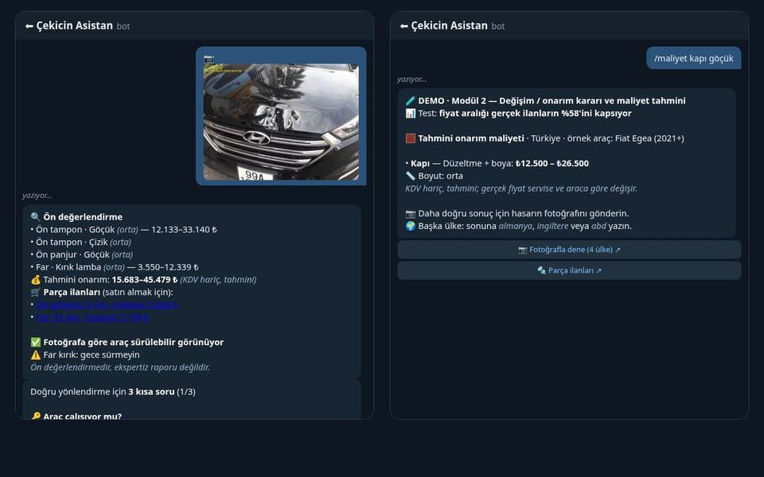
1 Demo · çıktı: Birkaç saniyede hasar türü, yeri, tahmini maliyet (₺) ve “çekici gerekir mi” önerisi. 🔍 büyütTelegram asistanı M1–M6
Fotoğraf → hasar + maliyet · konum → servis · çekici · sesli soru
Nasıl test edilir
- Telegram’da @Cekicin_bot’u açın, Başlat’a dokunun.
- Hasarlı aracın fotoğrafını gönderin (örnek: aşağıdaki test fotoğrafı).
- Ya da yazın:
/maliyet kapı göçük
Beklenen sonuç
✅ Birkaç saniyede hasar türü, yeri, tahmini maliyet (₺) ve “çekici gerekir mi” önerisi.
https://t.me/Cekicin_bot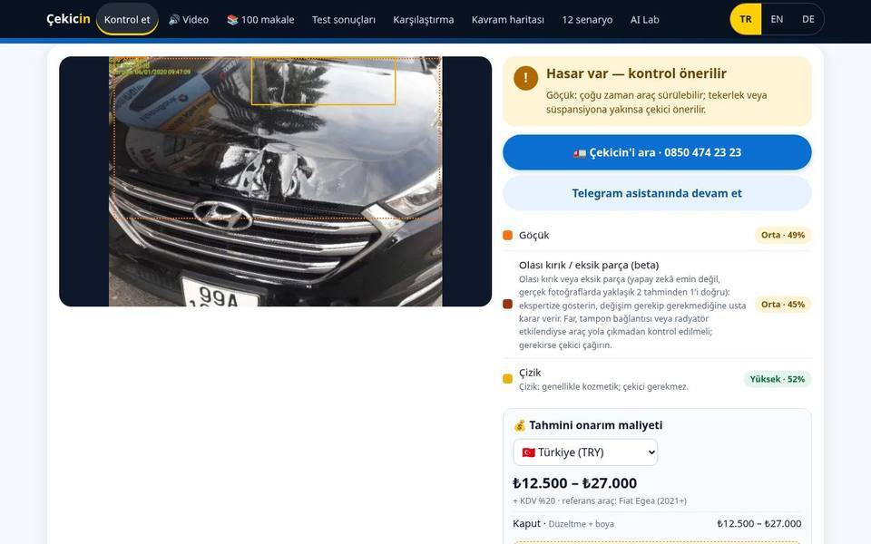
1 Demo · çıktı: ~8–20 sn: hasar kutularla işaretlenir, hasar listesi + güven düzeyi, ₺ maliyet aralığı ve parça ilanları. 🔍 büyütFotoğraf testi M1+M2
Araç fotoğrafı yükleyin, hasarı ve tahmini maliyeti görün
Nasıl test edilir
- Sayfayı açın, Fotoğraf seç’e dokunun.
- Aracın hasarlı yerinin fotoğrafını seçin (veya test fotoğrafını indirin).
- Sonuçta Ülke’yi değiştirip fiyatı başka para biriminde görün.
Beklenen sonuç
✅ ~8–20 sn: hasar kutularla işaretlenir, hasar listesi + güven düzeyi, ₺ maliyet aralığı ve parça ilanları.
https://cekicin-site.elasa2next.workers.dev/ai-lab/model-test.html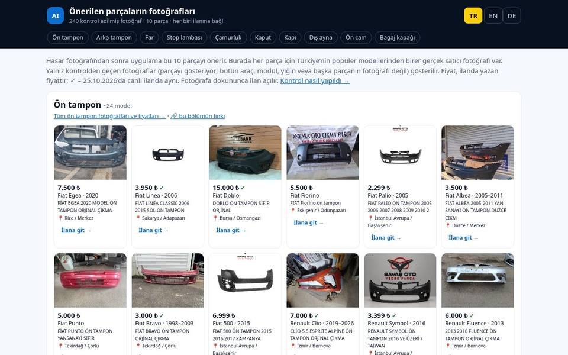
1 Demo · çıktı: Önerilen parçaların gerçek ilan fotoğrafları, fiyatları ve kaynak bağlantıları. 🔍 büyütYedek parça fotoğrafları M3
Önerilen parçaların fotoğrafı, fiyatı ve ilan bağlantısı
Nasıl test edilir
- Sayfayı açın.
- Bir parça kartına dokunun → ilan bağlantısı açılır.
Beklenen sonuç
✅ Önerilen parçaların gerçek ilan fotoğrafları, fiyatları ve kaynak bağlantıları.
https://cekicin-site.elasa2next.workers.dev/ai-lab/parts-photos.html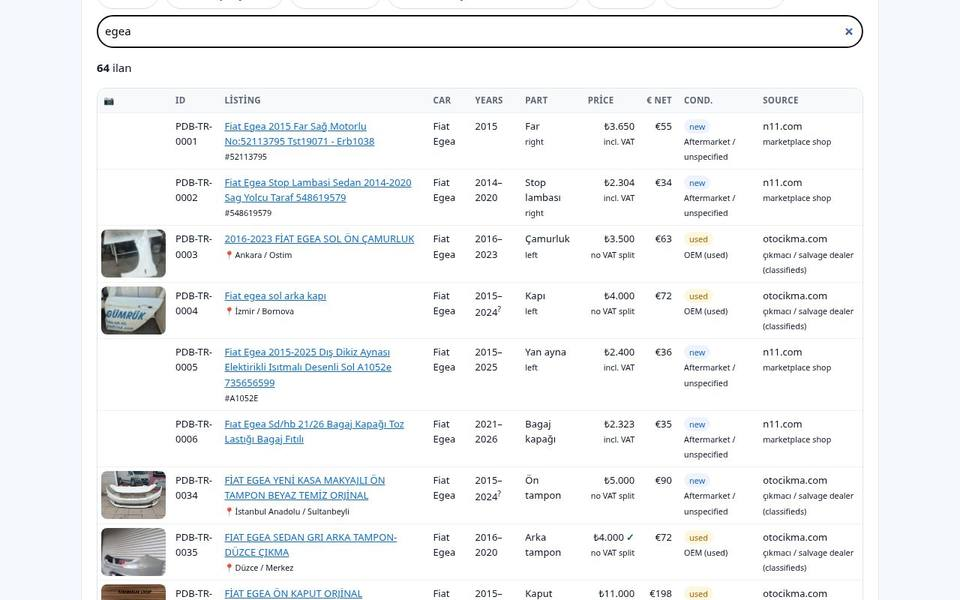
1 Demo · çıktı: Eşleşen ilanlar fotoğraf, fiyat, yıl ve kaynak bağlantısıyla listelenir. 🔍 büyütParça fiyat veritabanı M3
100 araç tipi, 4 ülke, kaynak bağlantılı fiyatlar
Nasıl test edilir
- Sayfayı açın.
- Arama kutusuna araç adı yazın, örn.
egea. - Ülke / parça filtresini değiştirin.
Beklenen sonuç
✅ Eşleşen ilanlar fotoğraf, fiyat, yıl ve kaynak bağlantısıyla listelenir.
https://cekicin-site.elasa2next.workers.dev/ai-lab/price-db.html2 🧩 AI modülleri ve testler
6 modül, ölçülen doğruluk ve teknik testler
🎬 Bu bölümün demo videosu
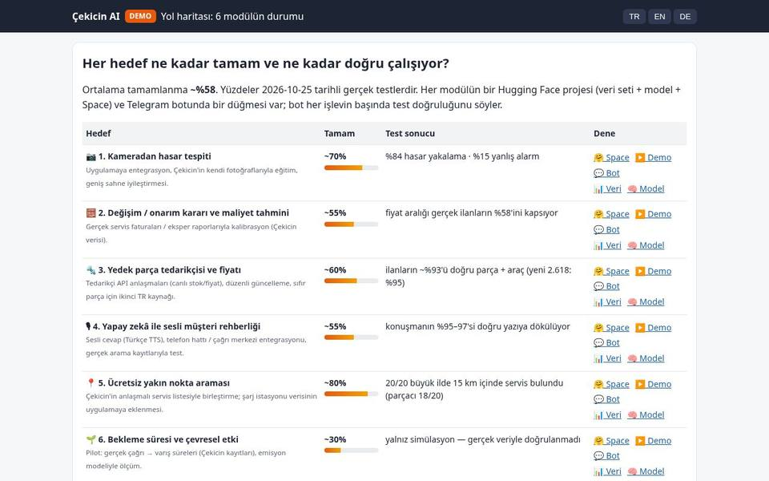
2 Demo · çıktı: 6 modülün hedefi, ölçülen test doğruluğu ve her birinin demo / veri / model bağlantıları. 🔍 büyüt6 AI modülü M1–M6
Her modülün amacı, test doğruluğu ve demosu
Nasıl test edilir
- Sayfayı açın.
- Bir modülün Demo bağlantısına dokunun.
Beklenen sonuç
✅ 6 modülün hedefi, ölçülen test doğruluğu ve her birinin demo / veri / model bağlantıları.
https://cekicin-site.elasa2next.workers.dev/ai-lab/modules.html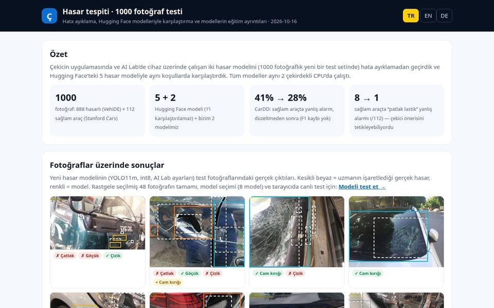
2 Demo · çıktı: 1000 fotoğrafta hasar yakalama ve yanlış alarm oranları, örnek görsellerle. 🔍 büyüt1000 fotoğraflık test M1
Hasar tespitinin büyük testi
Nasıl test edilir
- Sayfayı açın, tabloyu inceleyin.
Beklenen sonuç
✅ 1000 fotoğrafta hasar yakalama ve yanlış alarm oranları, örnek görsellerle.
https://cekicin-site.elasa2next.workers.dev/ai-lab/benchmark-1000.html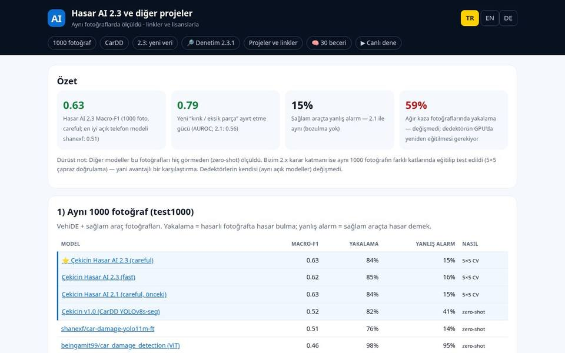
2 Demo · çıktı: Hasar AI ile açık modeller / makaleler yan yana (bağlantılı). 🔍 büyütDiğer modellerle karşılaştırma M1
Açık modeller ve makalelerle kıyas
Nasıl test edilir
- Sayfayı açın, karşılaştırma tablosuna bakın.
Beklenen sonuç
✅ Hasar AI ile açık modeller / makaleler yan yana (bağlantılı).
https://cekicin-site.elasa2next.workers.dev/ai-lab/compare.html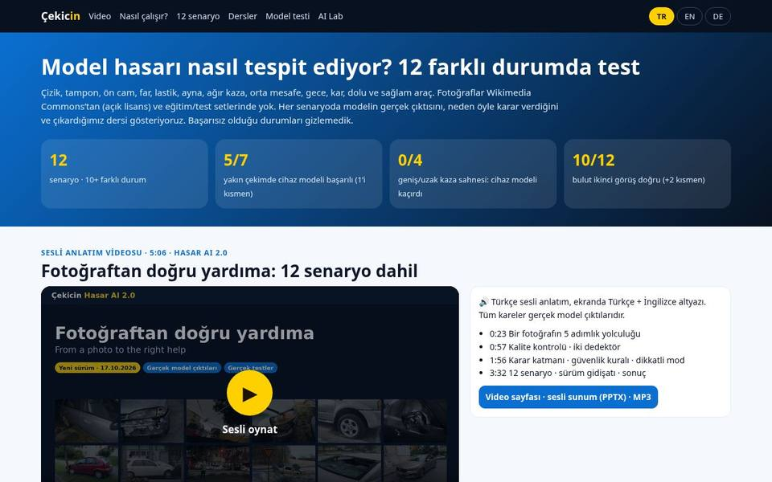
2 Demo · çıktı: 12 gerçek durum (gece, yağmur, uzak çekim…) ve modelin sonucu. 🔍 büyüt12 senaryo + video M1–M6
Gerçek hayattan kullanım örnekleri
Nasıl test edilir
- Sayfayı açın, bir senaryo seçin.
Beklenen sonuç
✅ 12 gerçek durum (gece, yağmur, uzak çekim…) ve modelin sonucu.
https://cekicin-site.elasa2next.workers.dev/ai-lab/scenarios.html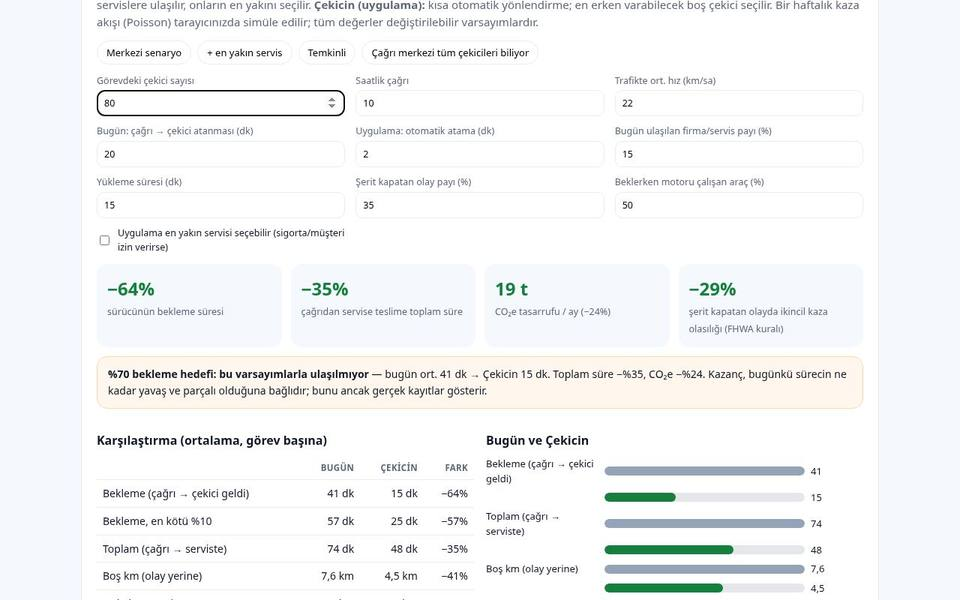
2 Demo · çıktı: Bugünkü ve Çekicin ile bekleme süresi, CO₂ farkı — <b>simülasyon</b>, gerçek veri değil. 🔍 büyütBekleme süresi ve CO₂ simülatörü M6
Filo için simülasyon (gerçek veri değil)
Nasıl test edilir
- Sayfayı açın.
- Çekici sayısını değiştirin.
- Bekleme süresi ve CO₂ sonuçlarının değiştiğini görün.
Beklenen sonuç
✅ Bugünkü ve Çekicin ile bekleme süresi, CO₂ farkı — <b>simülasyon</b>, gerçek veri değil.
https://cekicin-site.elasa2next.workers.dev/ai-lab/impact.html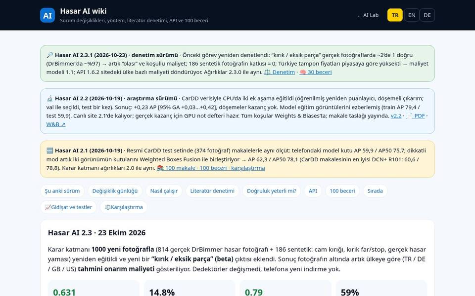
2 Demo · çıktı: Model sürümleri, değişiklikler ve nedenleri. 🔍 büyütWiki: model sürümleri
Hangi sürümde ne değişti
Nasıl test edilir
- Sayfayı açın, bir sürüm başlığına dokunun.
Beklenen sonuç
✅ Model sürümleri, değişiklikler ve nedenleri.
https://cekicin-site.elasa2next.workers.dev/ai-lab/wiki.html3 📊 Raporlar
Yönetim için proje durumu (PDF + video, TR/EN)
🎬 Bu bölümün demo videosu
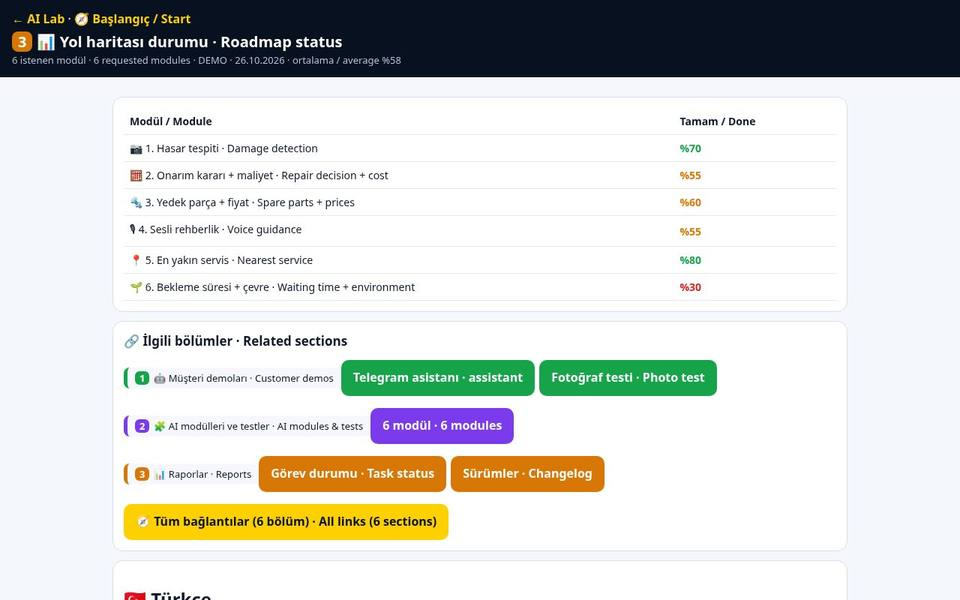
3 Demo · çıktı: 6 modülün tamamlanma yüzdesi tablosu, TR/EN video ve tıklanabilir PDF. 🔍 büyütYol haritası durum raporu
Sayfa: video + PDF, Türkçe ve İngilizce
Nasıl test edilir
- Sayfayı açın.
- Videoyu oynatın veya Rapor PDF’e dokunun.
Beklenen sonuç
✅ 6 modülün tamamlanma yüzdesi tablosu, TR/EN video ve tıklanabilir PDF.
https://cekicin-site.elasa2next.workers.dev/ai-lab/report/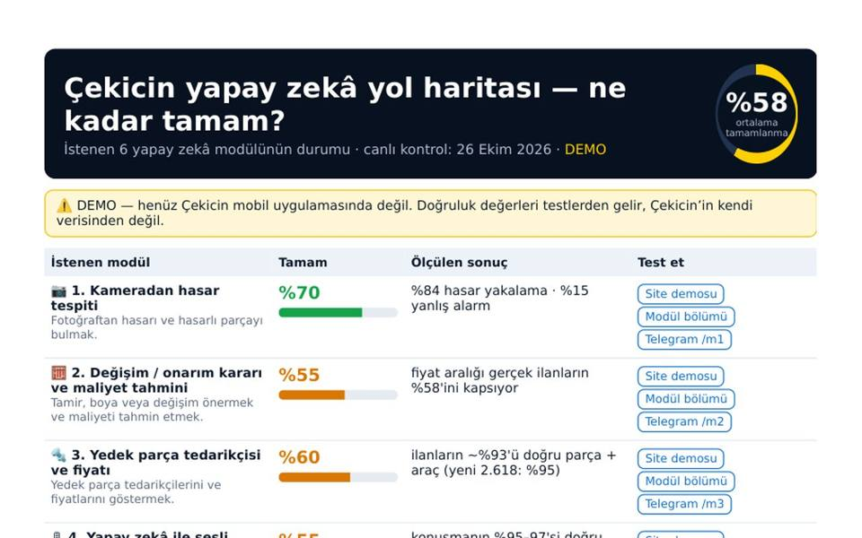
3 Demo · çıktı: 6 sayfalık Türkçe rapor; her modülün testi bağlantılı. 🔍 büyütRapor PDF (Türkçe)
6 sayfa, tıklanabilir bağlantılar
Nasıl test edilir
- PDF’i açın, içindeki bağlantılara dokunun.
Beklenen sonuç
✅ 6 sayfalık Türkçe rapor; her modülün testi bağlantılı.
https://cekicin-site.elasa2next.workers.dev/ai-lab/report/roadmap-status-tr.pdf 3 Demo · çıktı: 6 sayfalık İngilizce rapor. 🔍 büyüt
3 Demo · çıktı: 6 sayfalık İngilizce rapor. 🔍 büyütRapor PDF (İngilizce)
6 sayfa, tıklanabilir bağlantılar
Nasıl test edilir
- PDF’i açın, içindeki bağlantılara dokunun.
Beklenen sonuç
✅ 6 sayfalık İngilizce rapor.
https://cekicin-site.elasa2next.workers.dev/ai-lab/report/roadmap-status-en.pdf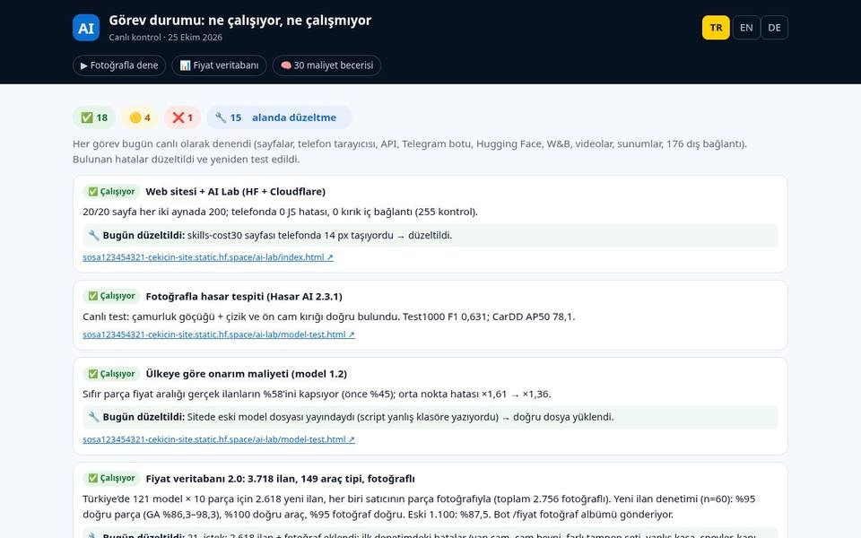
3 Demo · çıktı: Her görevin canlı durumu: çalışıyor, kısmen, çalışmıyor. 🔍 büyütGörev durumu (canlı kontrol)
Hangi görev çalışıyor, hangisi kısmen
Nasıl test edilir
- Sayfayı açın; yeşil / sarı / kırmızı işaretlere bakın.
Beklenen sonuç
✅ Her görevin canlı durumu: çalışıyor, kısmen, çalışmıyor.
https://cekicin-site.elasa2next.workers.dev/ai-lab/status.html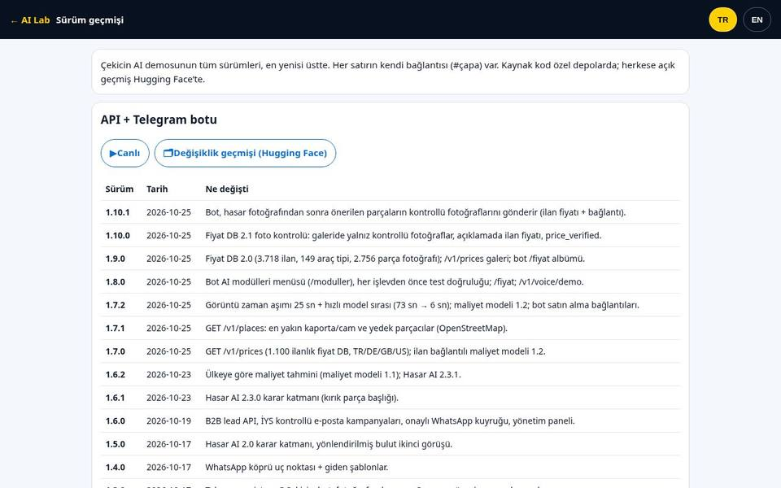
3 Demo · çıktı: Tarihli sürüm listesi (site, API, model). 🔍 büyütSürüm geçmişi
Tüm sürümler ve tarihleri
Nasıl test edilir
- Sayfayı açın.
Beklenen sonuç
✅ Tarihli sürüm listesi (site, API, model).
https://cekicin-site.elasa2next.workers.dev/ai-lab/changelog.html4 🤝 Ortaklık
Araştırma / ortak geliştirme ortakları için
🎬 Bu bölümün demo videosu
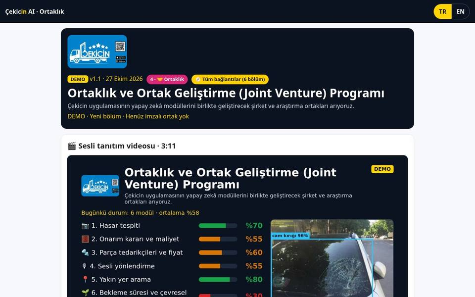
4 Demo · çıktı: 5 ortaklık modeli, destek yolları, süreç ve iletişim; TR/EN video + PDF. 🔍 büyütOrtaklık ve ortak geliştirme programı
Sayfa: modeller, destek yolları, video + PDF
Nasıl test edilir
- Sayfayı açın.
- Videoyu oynatın veya PDF’i açın.
Beklenen sonuç
✅ 5 ortaklık modeli, destek yolları, süreç ve iletişim; TR/EN video + PDF.
https://cekicin-site.elasa2next.workers.dev/ai-lab/partners/index.html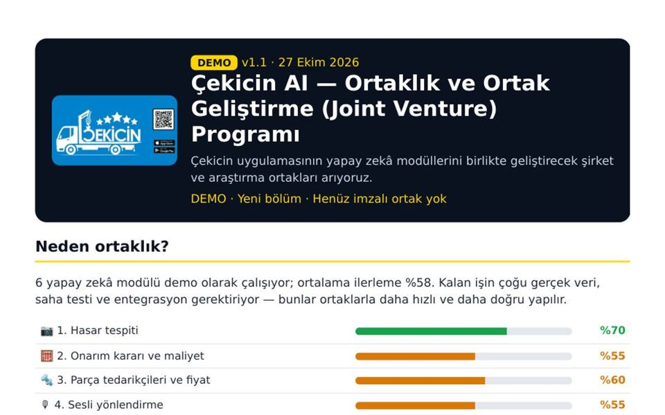
4 Demo · çıktı: 5 sayfalık Türkçe ortaklık dokümanı. 🔍 büyütOrtaklık PDF (Türkçe)
5 sayfa
Nasıl test edilir
- PDF’i açın.
Beklenen sonuç
✅ 5 sayfalık Türkçe ortaklık dokümanı.
https://cekicin-site.elasa2next.workers.dev/ai-lab/partners/cekicin-partnership-tr.pdf 4 Demo · çıktı: 5 sayfalık İngilizce ortaklık dokümanı. 🔍 büyüt
4 Demo · çıktı: 5 sayfalık İngilizce ortaklık dokümanı. 🔍 büyütOrtaklık PDF (İngilizce)
5 sayfa
Nasıl test edilir
- PDF’i açın.
Beklenen sonuç
✅ 5 sayfalık İngilizce ortaklık dokümanı.
https://cekicin-site.elasa2next.workers.dev/ai-lab/partners/cekicin-partnership-en.pdf5 🔐 Yönetim paneli
Giriş gerekir — kullanıcı adı ve şifre mesajda
🎬 Bu bölümün demo videosu
5 Demo · çıktı: Proje panosu (Farsça): ilerleme, raporlar, ortaklık, sürümler; tüm sayfalar 6 bölüme göre. 🔍 büyütYönetim paneli · Proje 🔐 Giriş gerekir
Proje panosu, raporlar, ortaklık, sürümler (salt görüntüleme)
Nasıl test edilir
- Paneli açın.
- Mesajdaki kullanıcı adı ve şifreyi girin.
- Proje · Raporlar sekmesi açılır; en üstte “Başlangıç” kartı.
Beklenen sonuç
✅ Proje panosu (Farsça): ilerleme, raporlar, ortaklık, sürümler; tüm sayfalar 6 bölüme göre.
https://cekicin-site.elasa2next.workers.dev/admin/leads.html#project 6 🌐 Site, yedek ve teknik
Ana sayfalar, yedek adres, API ve veri setleri
🎬 Bu bölümün demo videosu
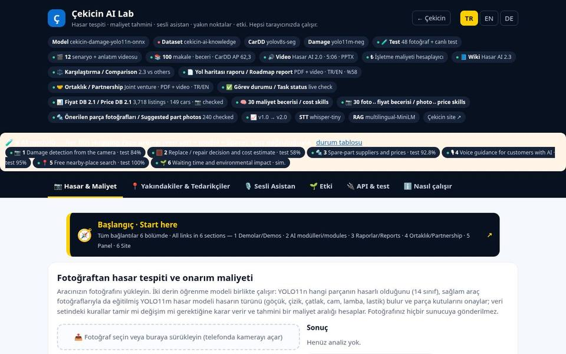
6 Demo · çıktı: Tüm AI sayfalarının girişi ve fotoğraf yükleme alanı. 🔍 büyütÇekicin AI Lab ana sayfası
Tüm AI sayfalarının girişi
Nasıl test edilir
- Sayfayı açın; en üstteki Başlangıç düğmesine dokunun.
Beklenen sonuç
✅ Tüm AI sayfalarının girişi ve fotoğraf yükleme alanı.
https://cekicin-site.elasa2next.workers.dev/ai-lab/index.html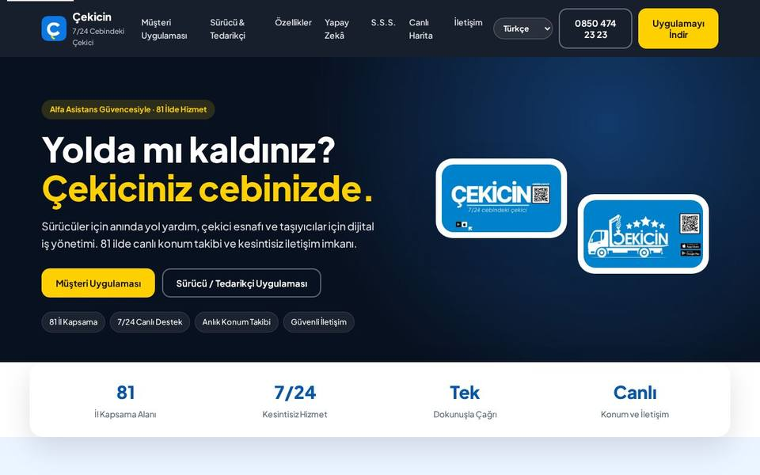
6 Demo · çıktı: Çekicin tanıtım sitesi. 🔍 büyütWeb sitesi ana sayfası
Çekicin sitesi (Cloudflare)
Nasıl test edilir
- Sayfayı açın.
Beklenen sonuç
✅ Çekicin tanıtım sitesi.
https://cekicin-site.elasa2next.workers.dev/index.html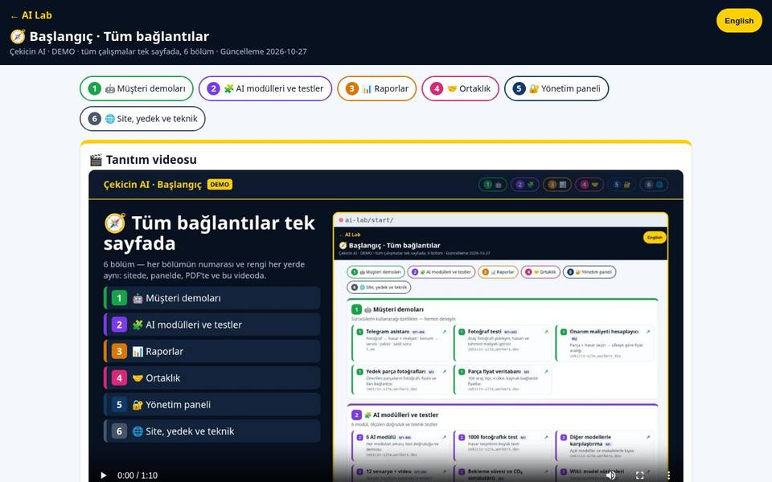
6 Demo · çıktı: Bu başlangıç sayfasının aynısı (Hugging Face). 🔍 büyütYedek adres (Hugging Face)
Ana adres açılmazsa bu başlangıç sayfası
Nasıl test edilir
- Ana adres açılmazsa bu adresi açın.
Beklenen sonuç
✅ Bu başlangıç sayfasının aynısı (Hugging Face).
https://sosa123454321-cekicin-site.static.hf.space/ai-lab/start/index.html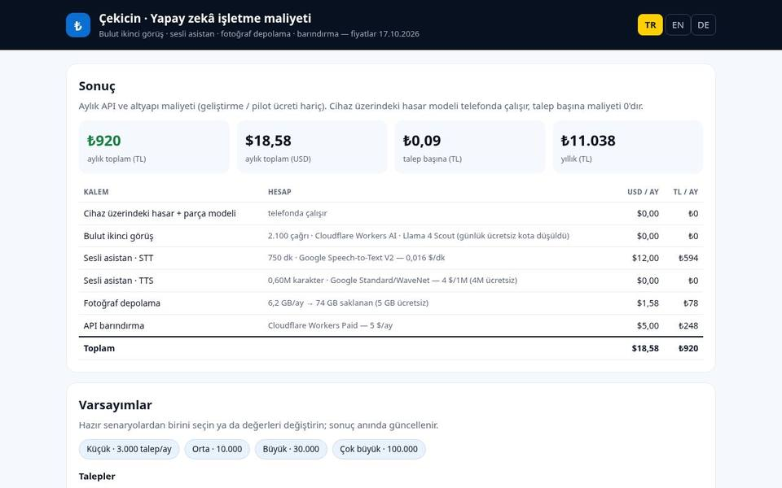
6 Demo · çıktı: İşletme için aylık AI / bulut maliyeti tahmini (müşteri aracı değil). 🔍 büyütAI işletme maliyeti hesaplayıcı
İşletme için: istek sayısına göre aylık bulut / AI maliyeti (müşteri aracı değil)
Nasıl test edilir
- Sayfayı açın.
- Aylık istek sayısını değiştirin.
Beklenen sonuç
✅ İşletme için aylık AI / bulut maliyeti tahmini (müşteri aracı değil).
https://cekicin-site.elasa2next.workers.dev/ai-lab/maliyet.html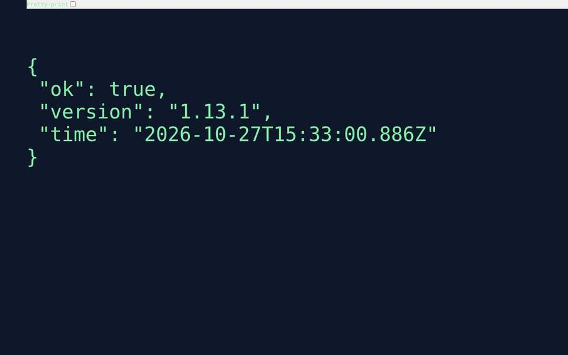
6 Demo · çıktı: <code>{"ok":true,"version":"1.13.1"}</code> — API canlı. 🔍 büyütAPI durumu
Canlı sürüm kontrolü
Nasıl test edilir
- Bağlantıyı açın.
Beklenen sonuç
✅ <code>{"ok":true,"version":"1.13.1"}</code> — API canlı.
https://cekicin-ai-api.elasa2next.workers.dev/v1/health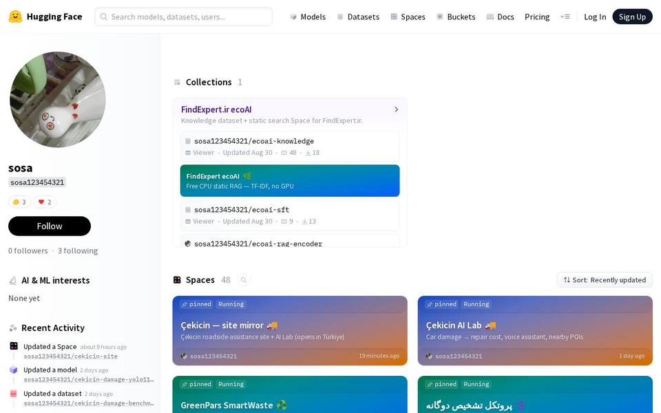
6 Demo · çıktı: Açık veri setleri, ONNX modelleri ve modül Space’leri. 🔍 büyütVeri setleri ve modeller
Hugging Face profili
Nasıl test edilir
- Profili açın; veri setleri ve modeller listelenir.
Beklenen sonuç
✅ Açık veri setleri, ONNX modelleri ve modül Space’leri.
https://huggingface.co/sosa123454321Yedek adres: sosa123454321-cekicin-site.static.hf.space